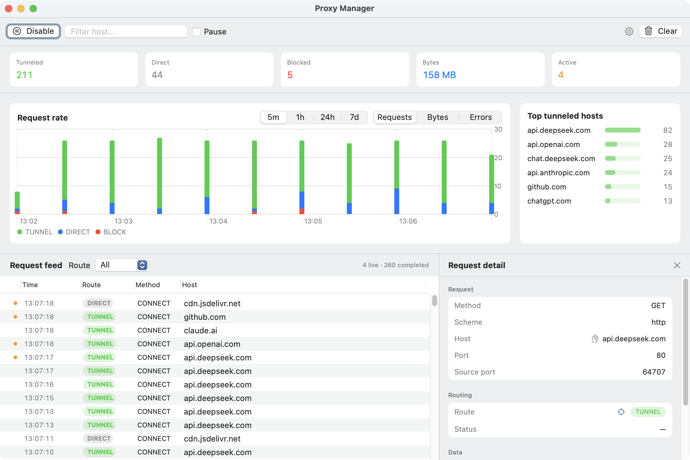
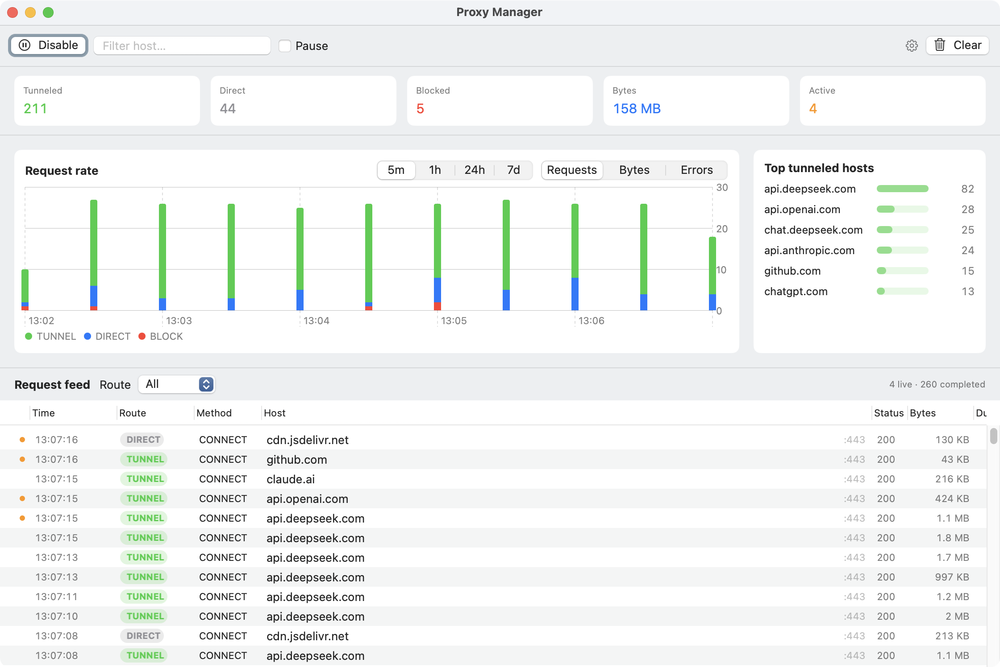
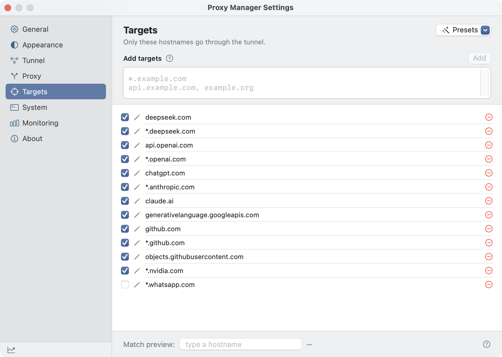
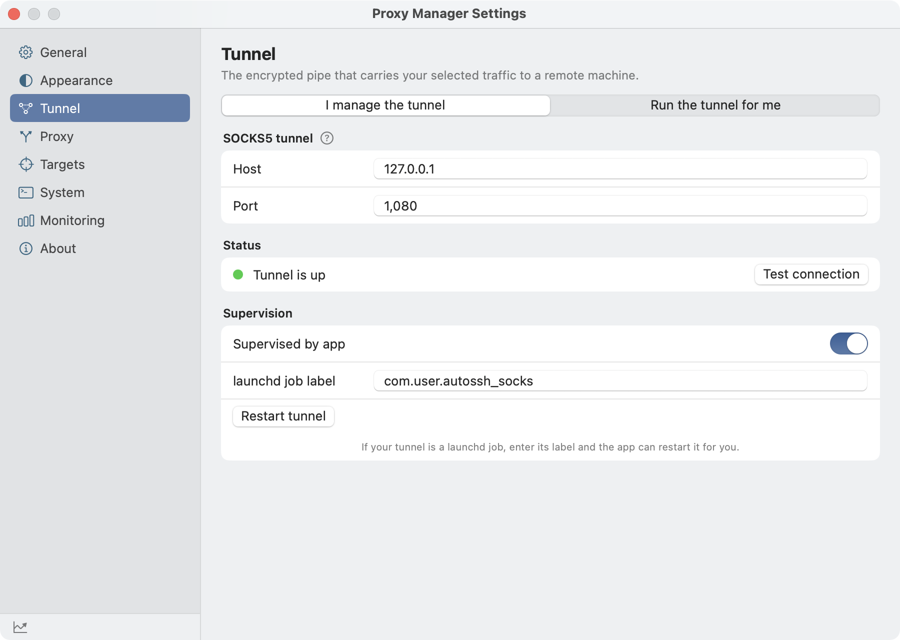
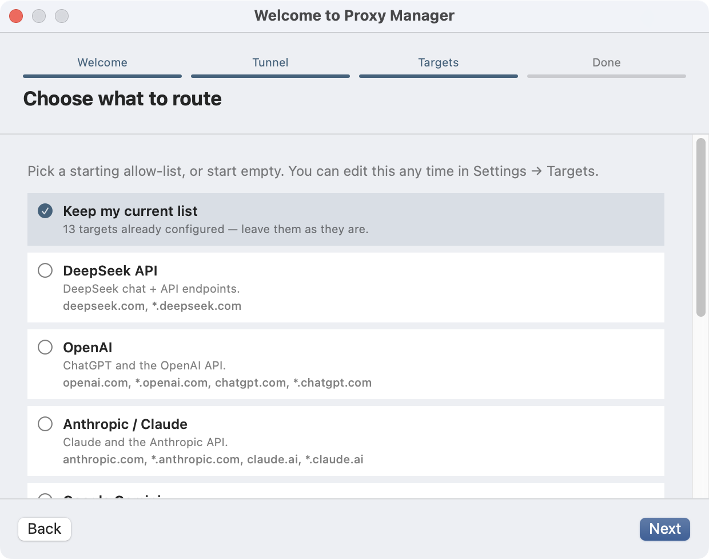

Per-request detail
Select any request to inspect its method, host, route decision, status, source port, and byte counts. Metadata only — request bodies and headers are never captured.
macOS menu-bar app · macOS 14+
Proxy Manager runs a small local HTTP proxy. The hostnames you allow go through your existing SOCKS5 proxy or SSH tunnel; everything else stays direct. Browsers, terminals, and system apps all honor it — nothing else is rerouted.

Live decisions, byte counts, and timings — on your machine, not in the cloud.

Select any request to inspect its method, host, route decision, status, source port, and byte counts. Metadata only — request bodies and headers are never captured.

Add exact hosts or wildcards like *.deepseek.com, toggle rules on and off, and preview what a hostname would match. Changes apply without restarting the proxy.

Point at any SOCKS5 proxy, or switch to “Run the tunnel for me” and let the app start and supervise an SSH tunnel. Passwords live in the Keychain, never in the config.

A short first-run wizard asks for your tunnel address and which hosts to route. Start from a preset — DeepSeek, OpenAI, Anthropic, Gemini, GitHub, NVIDIA, WhatsApp — or start empty.
A focused tool: route an allow-list, watch it work, and never break the rest of your connection.
Only the hostnames you list go through the tunnel. No match means direct — the local proxy is a policy router, not a MITM.
Sets the macOS system proxy for browsers and apps, and injects HTTP_PROXY/HTTPS_PROXY for CLI tools that can’t speak SOCKS5 directly.
Use any SOCKS5 proxy you already run, or have the app run and supervise ssh -N -D for you, with key-file or password auth.
A live feed of route decisions, hosts, methods, bytes, latency, and status — plus request-rate charts and per-host breakdowns.
A tiny crash watchdog restores your original proxy settings within milliseconds if the app is force-quit or crashes, so your connection is never left pointing at a dead local port.
TLS passes through untouched. The app records metadata only and stores it locally in SQLite — no request bodies, no headers, no cloud.
Start from curated allow-lists for common services, then add exact hosts or *.example.com wildcards of your own.
Sparkle 2 checks for new versions in the background and always asks before installing. Update checks are Never / Daily / Weekly.
Proxy settings for your network services are per-user, so enabling and disabling routing needs no password prompt on a normal setup.
One local hop decides where each connection goes.
CONNECT streams are relayed byte-for-byte.127.0.0.1. A non-loopback client is blocked from loopback, link-local, and private destinations.ssh through a one-shot askpass helper — never in the config file or on a command line.